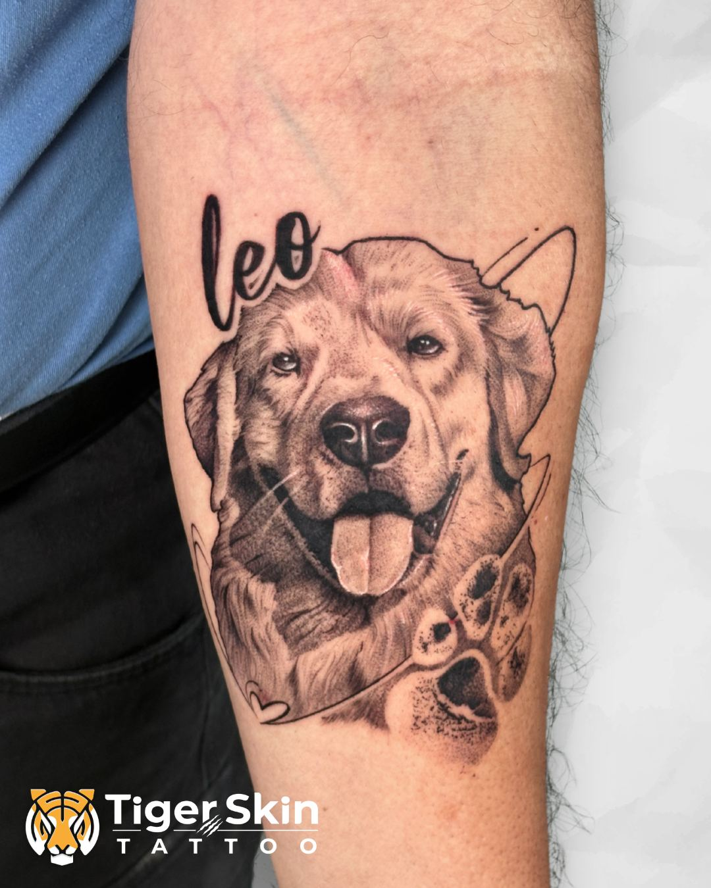
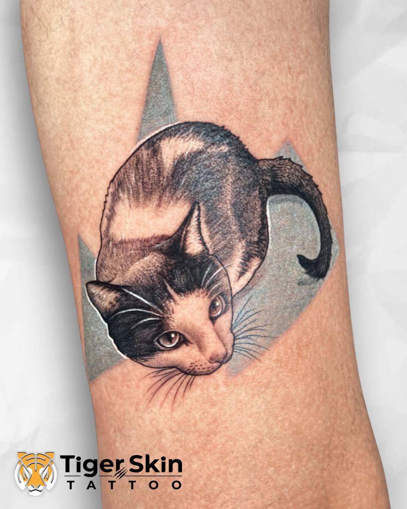
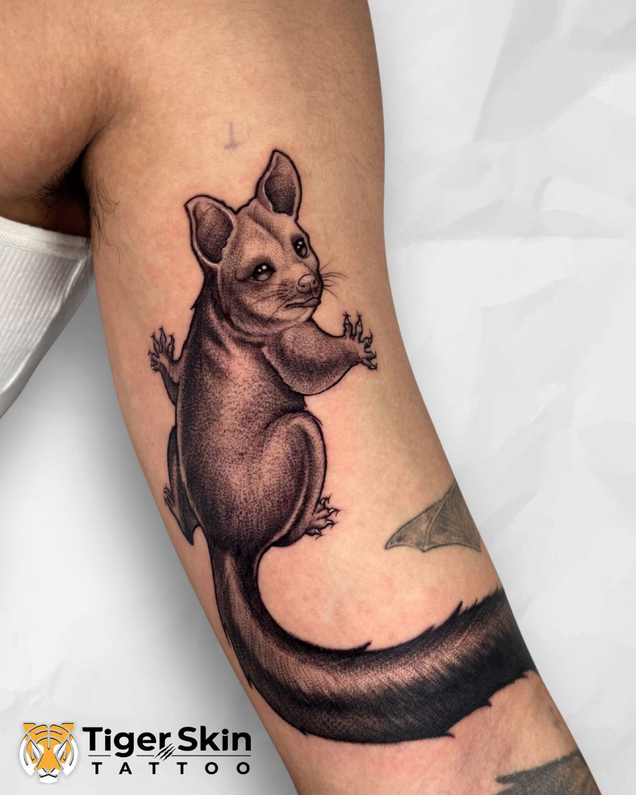

Your dog, cat, bird — immortalised on your skin with hyper-realistic detail. Every portrait is custom-drawn from your photos by Swarain Pawar at Tiger Skin Tattoos, Naupada, Thane West.
A pet portrait tattoo is one of the most meaningful pieces a person can wear. Whether it's to celebrate a pet who's still with you, or to carry a companion who's no longer here — the goal is the same: a portrait so real it stops you when you look at it.
At Tiger Skin Tattoos, Swarain Pawar has built his realism skills specifically around this kind of precision work — capturing fur texture, eye depth, light and life from your photographs. Every piece starts as a custom drawing, not a screenshot placed on the skin.
We've done portraits of dogs, cats, birds, horses and more — black & grey and colour, large and small. Share your photos and we'll tell you exactly what we can create.
The most popular — and the most emotional. We capture expression, texture, personality. Not just what your pet looks like. How they feel.
Lions, tigers, birds, horses — wildlife portraits done with the same hyper-real technique. Big, striking, built to last.
For the pets no longer with you. These are treated with extra care and thought — you'll be part of every design decision along the way.
Every piece below was drawn from client photographs — no stock references, no copied designs.



Pet portraits live or die on technical realism. Swarain has spent years mastering portrait realism — the fur, depth and eye detail you see in the portfolio come from focused, deliberate practice, not shortcuts.
Every portrait starts from YOUR photographs — custom composition, appropriate sizing, planned for the exact placement you want. No generic pet template from a flash sheet.
We review your photos together and tell you honestly what will translate best to skin. We'll recommend the size, placement and style that gives your portrait the best chance of looking great for life.
Located at Naupada, Thane West — easy to reach from Thane station, Mulund, Ghodbunder Road. Appointment-only, fully prepared station for every client.
Pricing starts from ₹2,000 for small pieces (under 2 inches). We charge ₹1,000 per square inch — a palm-sized portrait typically runs ₹8,000–14,000 depending on detail. Full day sessions are ₹30,000–35,000 for large-scale work. Get an accurate quote based on your photos at your free consultation.
High-resolution photos with good natural lighting work best. Close-up shots that show your pet's eyes and facial features clearly are ideal. Multiple angles help. Avoid dark or blurry images — the better your reference, the more detailed the tattoo can be. We'll help you select the best reference during consultation.
For portraits to hold the level of detail fur and eyes require, we recommend at least 3×3 inches. Larger pieces (5 inches and up) allow for far more depth. We'll recommend the right size based on your placement — forearm, calf, upper arm, chest — at your consultation.
Yes, and these are always approached with extra care. If you've lost a pet and want to carry them with you, share your photos and we'll talk through exactly how to do them justice. These are some of the most meaningful tattoos we do.
Share your photos and we'll tell you what we can create. Consultations are free. The fastest path is a call or WhatsApp — send your photos directly and we'll reply quickly.